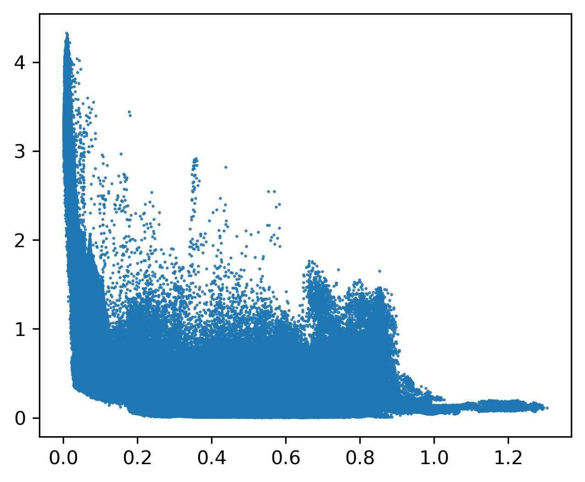
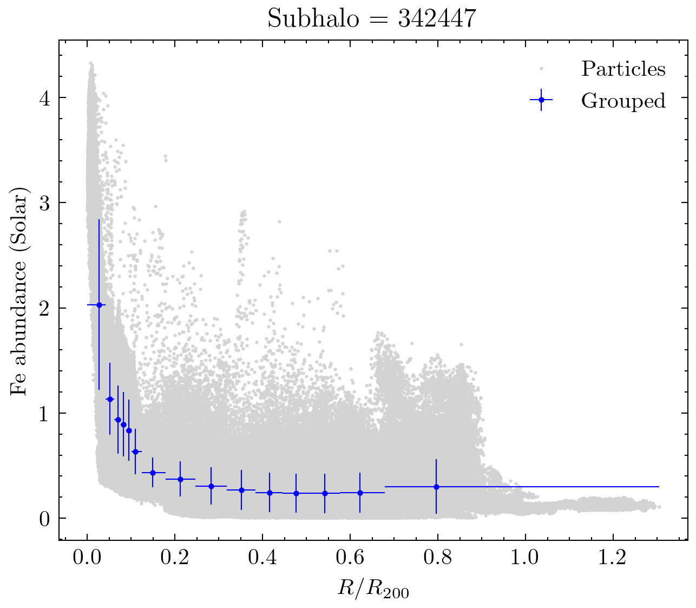
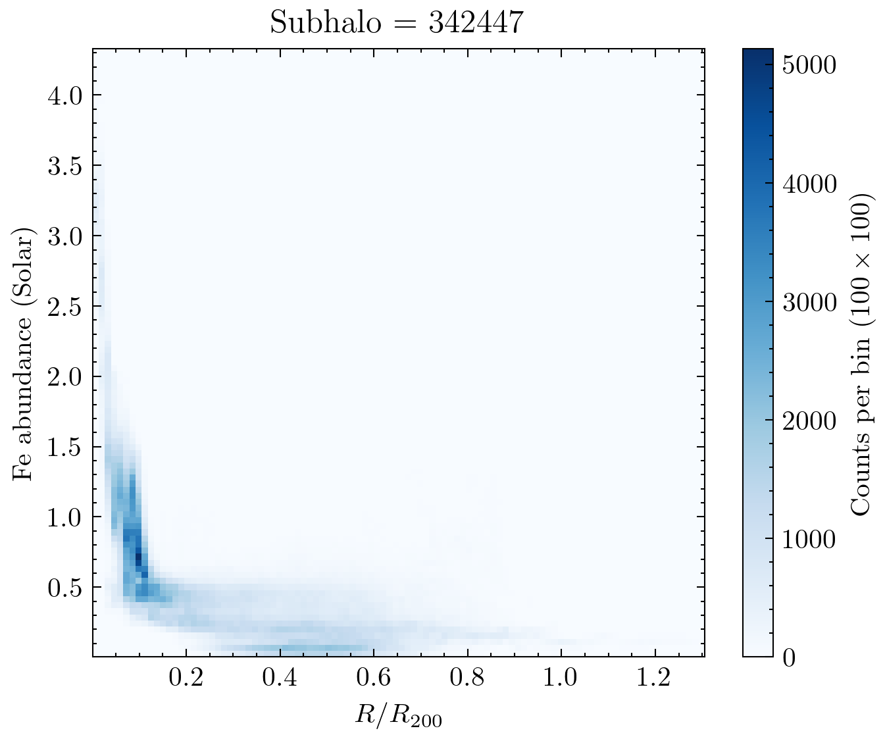
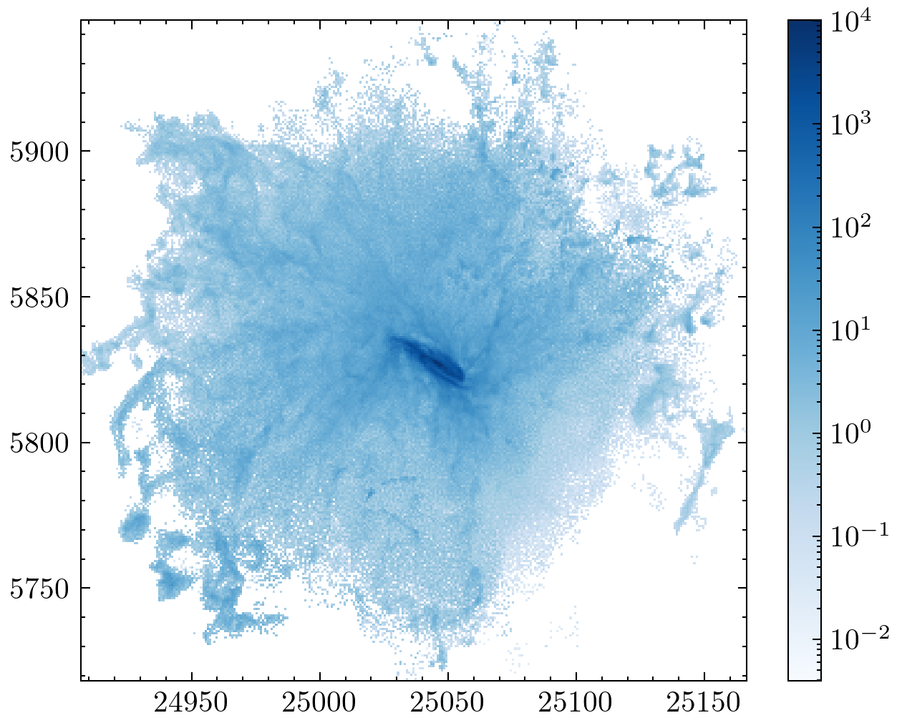
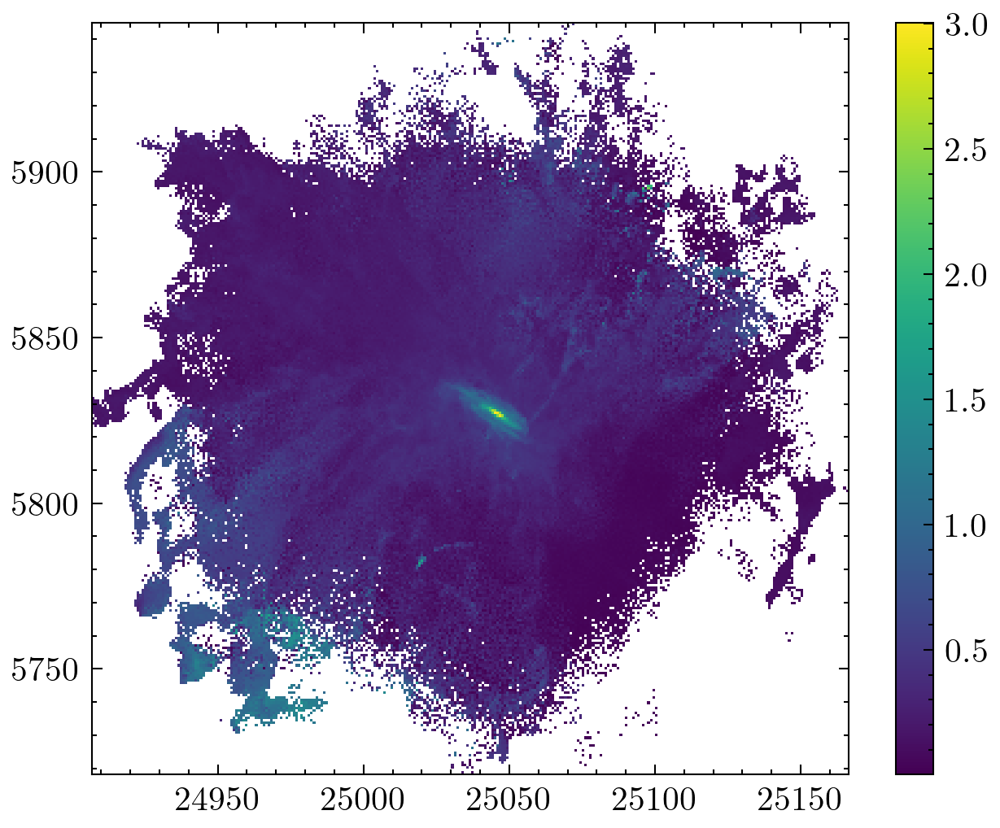

Caculation virial radius2
The following modules installed.
- import illustris_python as il
- import numpy as np
- import pandas as pd
- import os
- import matplotlib.pyplot as plt
- from matplotlib.colors import LogNorm
- import glob
with open("./eROSITAbubble_subhaloID.txt","r") as f:
SubhaloID = f.readlines()
SubhaloID = [int(x.replace("\n","")) for x in SubhaloID]
[342447,
372754,
372755,
388544,
392277,
400974,
402555,
411449,
414917,
419618,
421555,
422754,
424288,
425719,
427211,
428177,
430864,
432106,
433289,
435752,
436932,
438148,
439099,
440407,
441709,
443049,
445626,
446665,
448830,
452031,
452978,
454171,
458470,
459557,
456326,
461785,
462710,
464163,
465255,
467415,
468590,
469487,
470345,
471996,
472548,
473329,
474008,
475016,
476266,
477328,
478216,
479290,
479938,
482889,
485056,
488530,
489206,
490079,
490814,
491426,
492876,
493433,
494011,
494709,
496186,
497557,
499704,
500577,
501725,
502371,
502995,
503437,
503987,
504559,
505100,
505586,
506720,
510585,
514829,
515296,
515695,
517271,
518682,
519311,
520885,
521429,
521803,
522530,
523548,
523889,
528836,
530330,
530852,
531320,
532301,
532760,
534628,
535050,
535410,
539667,
540082,
540920,
541218,
541497,
542252,
542662,
543114,
543376,
544001,
545437,
546474,
546870,
547293,
547844,
550149,
550475,
552414,
553837,
554189,
554798,
555013,
557721,
560751,
563732,
565089,
571454,
572328]
def calcoordinates(x, y, z, cmx, cmy, cmz):
HalfBoxSize = 35000/2
if np.max(x) - np.min(x) > HalfBoxSize:
x[x > HalfBoxSize] -= 35000
if cmx > HalfBoxSize:
cmx -= 35000
if np.max(y) - np.min(y) > HalfBoxSize:
y[y > HalfBoxSize] -= 35000
if cmy > HalfBoxSize:
cmy -= 35000
if np.max(z) - np.min(z) > HalfBoxSize:
z[z > HalfBoxSize] -= 35000
if cmz > HalfBoxSize:
cmz -= 35000
return x,y,z,cmx, cmy, cmz
| SubhaloID | VirialRadius | EstimatedSubhaloMass | OfficialSubhaloMass | |
|---|---|---|---|---|
| 0 | 342447 | 223.019074 | 112.375799 | 112.375800 |
| 1 | 372754 | 353.391180 | 515.033109 | 515.033100 |
| 2 | 372755 | 223.046106 | 116.035698 | 116.035706 |
| 3 | 388544 | 335.840920 | 470.600609 | 470.600620 |
| 4 | 392277 | 219.705505 | 126.990417 | 126.990420 |
fe_num = {"H":0, "He":1,"Li":2,"Be":3,"B":4,"C":5,"N":6,"O":7,"F":8,"Ne":9,"Na":10,"Mg":11,"Al":12,"Si":13,"P":14,"S":15,"Cl":16,"Ar":17,"K":18,"Ca":19,"Sc":20,"Ti":21,"V":22,"Cr":23,"Mn":24,"Fe":25,"Co":26,"Ni":27,"Cu":28,"Zn":29}
| Z | El | atomicMass | angr | aspl | feld | aneb | grsa | wilm | lodd | lgpp | lgps | |
|---|---|---|---|---|---|---|---|---|---|---|---|---|
| 0 | 1 | H | 1.01 | 1.000000e+00 | 1.000000e+00 | 1.000000e+00 | 1.000000e+00 | 1.000000e+00 | 1.0000 | 1.000000e+00 | 1.000000e+00 | 1.000000e+00 |
| 1 | 2 | He | 4.00 | 9.770000e-02 | 8.510000e-02 | 9.770000e-02 | 8.010000e-02 | 8.510000e-02 | 0.0977 | 7.920000e-02 | 8.410000e-02 | 9.690000e-02 |
| 2 | 3 | Li | 6.94 | 1.450000e-11 | 1.120000e-11 | 1.260000e-11 | 2.190000e-09 | 1.260000e-11 | 0.0000 | 1.900000e-09 | 1.260000e-11 | 2.150000e-09 |
| 3 | 4 | Be | 9.01 | 1.410000e-11 | 2.400000e-11 | 2.510000e-11 | 2.870000e-11 | 2.510000e-11 | 0.0000 | 2.570000e-11 | 2.400000e-11 | 2.360000e-11 |
| 4 | 5 | B | 10.80 | 3.980000e-10 | 5.010000e-10 | 3.550000e-10 | 8.820000e-10 | 3.550000e-10 | 0.0000 | 6.030000e-10 | 5.010000e-10 | 7.260000e-10 |
# Y_ = ((Data[f"{sei}"] / abd["atomicMass"][fe_num[f"{sei}"]]) / (Data[f"{sei2}"] / abd["atomicMass"][fe_num[f"{sei2}"]])) / (
# abd["aspl"][fe_num[f"{sei}"]] / abd["aspl"][fe_num[f"{sei}"]]
# )
Fe_solar = abd["aspl"][fe_num[f"{sei}"]]
H_solar = abd["aspl"][fe_num[f"{sei2}"]]
Fe_num_den = Data[f"{sei}"]/abd["atomicMass"][fe_num[f"{sei}"]]
H_num_den = Data[f"{sei2}"]/abd["atomicMass"][fe_num[f"{sei2}"]]
Y_ = ((Fe_num_den/H_num_den)/(Fe_solar/H_solar))
[<matplotlib.lines.Line2D at 0x7f60f3644eb0>]

[0.027229859218266893,
0.052146120246041275,
0.07011900080841908,
0.08290019515499698,
0.09507739159599483,
0.1101400960230622,
0.14929062683691652,
0.21259927097478123,
0.2826449154862205,
0.3512743483987321,
0.41580111588392493,
0.4765867967053872,
0.5416026198696712,
0.6216599342798659,
0.7968111378164491]
[2.0300145,
1.1349896,
0.9388048,
0.8934593,
0.8369607,
0.63319904,
0.4343084,
0.37190464,
0.3066987,
0.26914242,
0.24444346,
0.23922941,
0.23568189,
0.24245444,
0.301213]
# group_X_Width = [(np.max(i) - np.min(i))/2 for i in group_X]
group_X_Width = [(np.mean(i)-np.min(i),np.max(i)-np.mean(i)) for i in group_X]
group_X_Width = np.array(group_X_Width).T
group_Y_Std = [np.std(i) for i in group_Y]
# group_Y_95CI = [1.96*np.std(i)/np.sqrt(len(i)) for i in group_Y]
plt.figure(figsize=(5,4),dpi=300)
plt.plot(X_,Y_,".", ms=1, c="lightgray", label="Particles")
plt.errorbar(group_X_Mean, group_Y_Mean, xerr=group_X_Width, yerr=group_Y_Std,fmt="b.",lw=0.5, label="Grouped",markersize=3)
plt.legend()
plt.xlabel("$R/R_{200}$")
plt.ylabel(f"{sei} abundance (Solar)")
plt.title(f"Subhalo = {SubhaloID[0]}")
Text(0.5, 1.0, 'Subhalo = 342447')

plt.figure(figsize=(5,4),dpi=300)
plt.hist2d(X_,Y_, bins=100,cmap="Blues")
plt.colorbar(label=r"Counts per bin ($100 \times 100$)")
plt.xlabel("$R/R_{200}$")
plt.ylabel(f"{sei} abundance (Solar)")
plt.title(f"Subhalo = {SubhaloID[0]}")
Text(0.5, 1.0, 'Subhalo = 342447')

plt.figure(figsize=(5,4),dpi=300)
plt.hist2d(x, y, weights=Y_, bins=301,cmap="Blues", norm=LogNorm())
plt.colorbar()
<matplotlib.colorbar.Colorbar at 0x7f60ede72ec0>

hist_, xed, yed = np.histogram2d(x, y, bins=301, weights=Y_)
hist_n, xed, yed = np.histogram2d(x, y, bins=301)
plt.figure(figsize=(5,4),dpi=300)
plt.pcolormesh(xed,yed,(hist_/hist_n).T)
plt.colorbar()
/tmp/ipykernel_3112686/853545983.py:4: RuntimeWarning: invalid value encountered in divide
plt.pcolormesh(xed,yed,(hist_/hist_n).T)
<matplotlib.colorbar.Colorbar at 0x7f60eddacb50>
